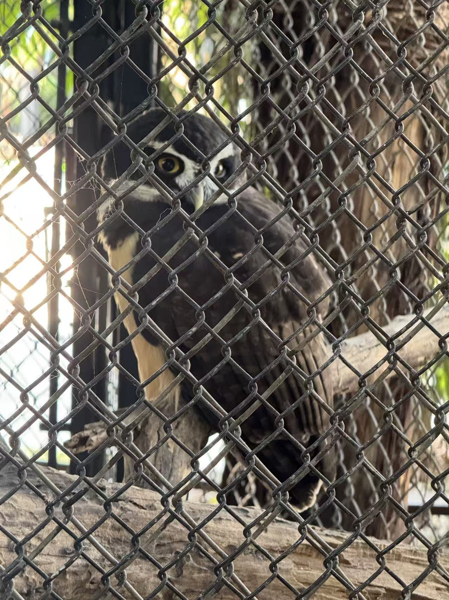

Owl
Silent night hunter
Owls use very good hearing and soft feathers for silent flight. Many hunt at night and rest during the day.

Owls use very good hearing and soft feathers for silent flight. Many hunt at night and rest during the day.
